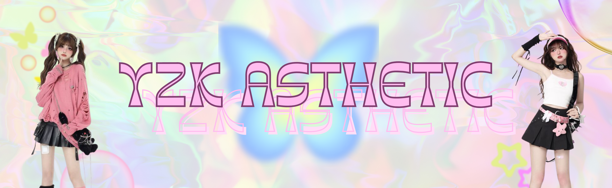

GIẢI MÃ PHONG CÁCH Y2K
-25/10/2023-
Y2K - phong cách thời trang nổi loạn có lẽ không còn xa lạ gì với chúng ta bởi thời trang và xu hướng thẩm mỹ từ cuối thập niên 90 đầu 2000 - đã gây chú ý trở lại trong những năm gần đây và được các tín đồ thời trang chào đón nồng nhiệt.
KẸP TÓC
Chiếc kẹp tóc có thể dễ dàng tìm mua và được kết hợp trong nhiều phong cách do có đa dạng thiết kế, màu sắc. Phụ kiện này còn được yêu thích nhờ khả năng mang lại vẻ ngoài trẻ trung, đáng yêu cho người sử dụng. Không chỉ được Gen Z ưa chuộng, các kiểu kẹp bằng đá, kẹp ngọc trai còn chiếm trọn tình cảm của những cô gái theo đuổi phong cách vintage aesthetic.


DÂY ĐEO HẠT CƯỜM
Mùa lễ hội, những kì nghỉ cực cháy sao có thể bỏ qua món phụ kiện đầy sắc màu, sự kết hợp đầy sáng tạo của phong cách thập niên 2000 mà vẫn bắt kịp trend hiện tại? Những chiếc vòng cổ, dây đeo hạt cườm cho ra những phong cách riêng biệt, mang đậm dấu ấn cá nhân giúp thoả đam mê những tín đồ thời trang dù là khó tính nhất!
MŨ
Là phụ kiện phổ biến của cộng đồng hip hop những năm 80, mũ xô từng bước trở thành món đồ thời trang không thể thiếu của trào lưu Y2K. Hiện nay, những chiếc mũ xô xuất hiện với tần số dày đặt với nhiều phiên bản bắt mắt như tie dye, kiểu đan móc crochet, denim, họa tiết ngựa vằn,… cùng các tông màu rực rỡ thu hút rất lớn giới trẻ